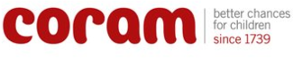
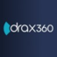

.png)
Helping organisations turn people insight into practical improvement through Investors in People support, employee voice, leadership reviews and organisational development.
Helping organisations turn people insight into practical improvement through Investors in People support, employee voice, leadership reviews and organisational development.
We help organisations improve leadership, employee engagement, culture and business performance through practical, evidence-based consultancy and support
Creating workplaces where people can thrive and perform at their best.
Developing confident leaders who inspire trust, engagement and accountability.
Turning feedback and insight into measurable organisational improvement.
Providing practical support, challenge and expertise every step of the journey.
Whether you're exploring Investors in People, employee engagement, leadership development or wider organisational improvement, an initial conversation can help identify the right next steps.
Book a no-obligation consultation to discuss your challenges, priorities and opportunities.
Schedule onlineProud to support organisations across the public, private and not-for-profit sectors.




Helping organisations achieve, maintain and maximise the value of Investors in People accreditation.
Whether you're beginning your Investors in People journey or looking to build on an existing accreditation, we provide expert guidance, challenge and support every step of the way.
Services include:
Turning employee feedback into meaningful action.
Highly engaged employees drive better customer experiences, stronger retention and improved business performance. We help organisations understand what their people are thinking and, more importantly, what to do about it.
Services include:
Developing confident, effective leaders who inspire performance.
Strong leadership is at the heart of every successful organisation. We help leaders understand their impact, strengthen their capabilities and create environments where people perform at their best.
Services include:
Helping organisations move from aspiration to action.
Many organisations know where they want to go but struggle to translate ambition into practical delivery. We work with leadership teams to create clear strategic direction, align people and processes, and implement sustainable improvements that deliver measurable results.
Whether you're creating a new strategy, refreshing an existing plan, or looking to improve execution and accountability, we provide practical frameworks and expert facilitation to help turn ideas into action.
Services include:
Established in 2016, RB Business Insights provides independent, evidence-based consultancy for organisations that want to improve how they lead, engage and support their people.
The approach is practical, straightforward and focused on helping organisations make improvements that are realistic, meaningful and sustainable.
RB Business Insights works with a trusted network of experienced consultants and associates, bringing together specialist expertise to support organisations across leadership, people, culture and business improvement.

Founder & Senior Consultant
Richard is an experienced organisational development consultant specialising in Investors in People, employee engagement, leadership development and business improvement. With more than 17 years' experience supporting organisations across a wide range of sectors, Richard helps clients turn insight into practical action and sustainable improvement.
Before launching RB Business Insights, Richard held senior leadership and business development roles with organisations including Grant Thornton, Exemplas, Sainsbury's, Hollywood Bowl, and Tenpin. His background combines strategic consultancy with hands-on operational leadership, giving him a practical understanding of how organisations can improve performance through their people.
"I met Richard in 2015 when we first decided to work towards Investors in People accreditation. Richard's broad knowledge and insights on both Leadership and Company Culture have been instrumental in improving SWR as a workplace, improving employee engagement and ultimately achieving IIP Gold. It's always a pleasure to work together and we look forward to doing so long into the future."
CEO, SWR Group
"I have now worked with Richard over the last 2 years as our IIP Assessor and throughout have found that Richard has provided first class information, advice and guidance. Richard is a collaborative professional who has helped to shape strategy and this in turn has helped support and develop the ideas, planning and implementation of key company initiatives. Both myself and the staff here at Salts find Richard very approachable and helpful. He provides balanced feedback and useful summary reports of where we are and need to be to improve for the future. I would have no hesitation on recommending Richard to any organisation."
Head of People, Salts
"Richard has been a critical friend of our business for the past four years, asking deep and searching questions to help us find our own ways of improving the workplace and the employee experience. I find Richard really easy to work with and his approach suits the way I and the business like to work."
Managing Director, Pearson UK
"Richard is highly client-focused, with a genuine desire to support the customer in the best possible way. He has a 'can do' approach, seeking to address problems through the most effective route. Extremely personable, he seeks to quickly build a good rapport with clients and is very responsive to their needs. Similarly, his honesty ensures that the customer receives a high level of service. For any organisation looking to develop and grow, Richard is a great first point of contact to have."
Director, Business Growth Services
"I worked with Richard over the past year with the Business Growth Services. His support was tremendous. A great strategist who can help you look at a situation from different angles, and provide thoughtful counsel with great integrity and knew how to balance situations and was a wonderful confidence booster when you thought things would not work out. Thank you for a great partnership."
Founder, Growth-Focused Organisation
Whether you're exploring Investors in People, employee engagement, leadership development or business improvement, we'd be delighted to discuss how RB Business Insights can help.
Your details will only be used to respond to your enquiry and will never be shared with third parties.
Prefer email? richard@rb-businessinsights.co.uk